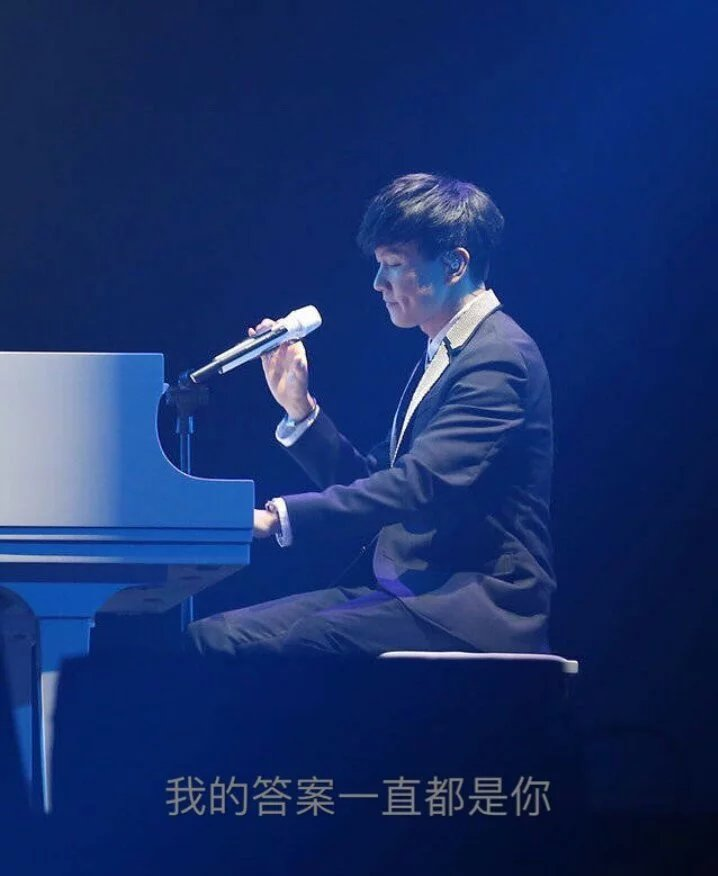
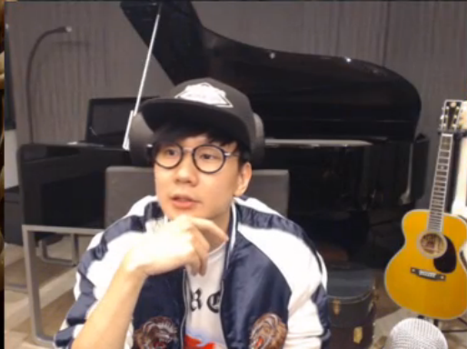
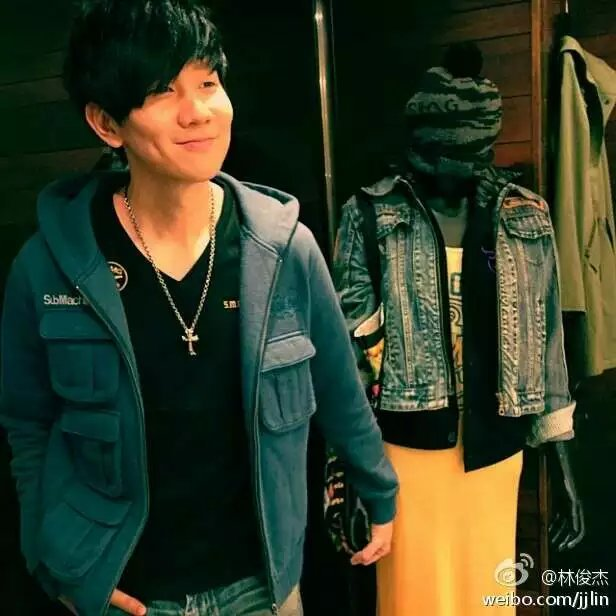

林俊杰（英语：Lin Jun Jie，1981年3月27日－），昵称JJ，新加坡籍男歌手、词曲创作者、音乐制作人。林俊杰官网。2003年4月发表首张个人专辑《乐行者》并正式出道；2004年凭借歌曲《江南》而成名，并于同年5月8日获得第15届金曲奖之“最佳演唱新人奖”；2007年成立音乐制作公司“JFJ Productions”，负责单曲及专辑制作；2011年8月8日，签约华纳音乐；
2013年发行《因你而在》专辑，内含《修炼爱情》一曲，并将之拍成动画微电影，以献给在胜安航空185号班机上遭遇空难的一位女性友人；[2][3]2014年6月28日，凭借第十张个人专辑《因你而在》，获得第25届金曲奖最佳国语男歌手奖；[4][5]2016年6月25日，凭借第十二张个人专辑《和自己对话》及其主打单曲《不为谁而做的歌》，获得第27届金曲奖最佳国语男歌手奖和最佳作曲人奖。
2015年，1月初，作为唯一华语歌手代表，担任Beats By Dr.Dre耳机全球代言人，广告登陆纽约时代广场；2月14、15日，安可场“时线：新地球世界巡回演唱会”开启，继《新地球》专辑中与Jason Mraz、郑容和跨国合作后，台北演唱会邀来滨崎步担任嘉宾并合作歌曲《The Gift》，音乐交流版图横跨美、韩、日；2月27、28日，连续两天担任新加坡妆艺大游行压轴表演嘉宾，演唱其原创活动主题曲《Dreams》；8月9日，受邀担任新加坡50周年国庆庆典表演嘉宾，献唱国庆主题曲《Our Singapore》；12月19日，“时线世界巡回演唱会”横跨4大洲、31个城市，创下累积42场、超过50万人次的佳绩后，在高雄正式落幕；12月25日，发行首张实验专辑《和自己对话》，创流行乐坛先例使用“人头录音”技术，将声音拟真创造空间感，打造“3D超立体环绕听觉”，凭借该专辑三度蝉联台湾五大金榜华语榜年度销售冠军，专辑《新地球》亦同时占据榜单亚军位置 。
林俊杰
林俊杰
林俊杰
林俊杰
林俊杰
林俊杰
林俊杰
林俊杰
2016年06月25日，获得第27届台湾金曲奖最佳国语男歌手奖。
| 发行年份 | 所属专辑 | 歌曲名 | ||
|---|---|---|---|---|
| 2013-03-13 | 《因你而在 Stories Untold》 | 因你而在 | ||
| 2014-12-27 | 《新地球 GENESIS》 | 黑键 | ||
| 2015-12-25 | 和自己对话 From M.E. to myself | too bad | ||
| 2016-06-21 | <<<<<<< HEAD超越无限 （纪录片《听·见林俊杰》主题曲） | =======超越无限 （纪录片《听·见林俊杰》主题曲） | >>>>>>> 497b0eb35e72190e5257939b3035d501709e2601||